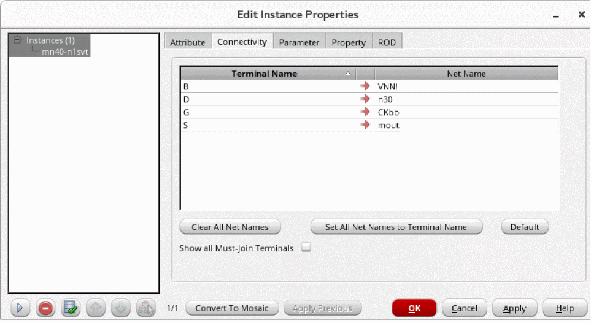

Propagating Nets
The Propagate Nets command maps terminals on an instance or a homogenous mosaic that you select to the nets in a cellview; that is, it defines how the instance or the instances in the homogenous mosaic are logically connected to the cellview. Using this command, you can assign or reassign a top-level net name for each terminal in the selected instances or the instances in the homogenous mosaic. For each such terminal, the command creates a top-level net, if necessary, and creates an instTerm on that net for the instance terminal. You use this command when you do not have a schematic for your layout cellview.
Routers use this logical connectivity information to physically connect the pins of the instance to the rest of the layout.
To promote net information from an instance in your layout:
- In the layout window, select one or more instances.
-
Choose Connectivity – Nets – Propagate.
A dialog box appears informing that the Propagate Nets form is now obsolete and instead the Connectivity tab of the property editor will be opened for the selected instances. -
Select the Do not show again check box if you want to disable the display of this message in future. Then, click Close.
The Connectivity tab of the Edit Instance Properties form opens, showing the terminals of the instance and the top-level nets they are mapped to, if any. Top level refers to the cellview in which the instance is placed.
 -
Hover over a terminal name on the Connectivity tab. The terminal gets highlighted on the canvas.
Similarly, when you hover over a net name on the tab, the net gets highlighted on the canvas. -
For each terminal, in Net Name, specify the top-level net to which you want to map the terminal.
If a Net Name field is left blank, the corresponding terminal is not mapped to a top-level net. Net Name fields can be left blank, but the pins on the corresponding terminals will not be routed.- If you want the net to have the same name as the terminal name, type or select the terminal name or click the button.
- If you want all the top-level nets to have the same name as the terminal name, click Set All Net Names to Terminal Name.
- If you want to undo all the changes, click Defaults. The net names revert to their current value.
- If you want to clear all the net names, click the Clear All Net Names button.
The form keeps track of all the changes you have made. You do not need to click Apply after each change before editing other instances. -
Click OK or Apply to apply all the changes.
All the changes you have made are saved to the database. If you want to view all the nets in your design, you can enable the Nets option in the Display Options form and redraw the view.
Related Topics
Return to top